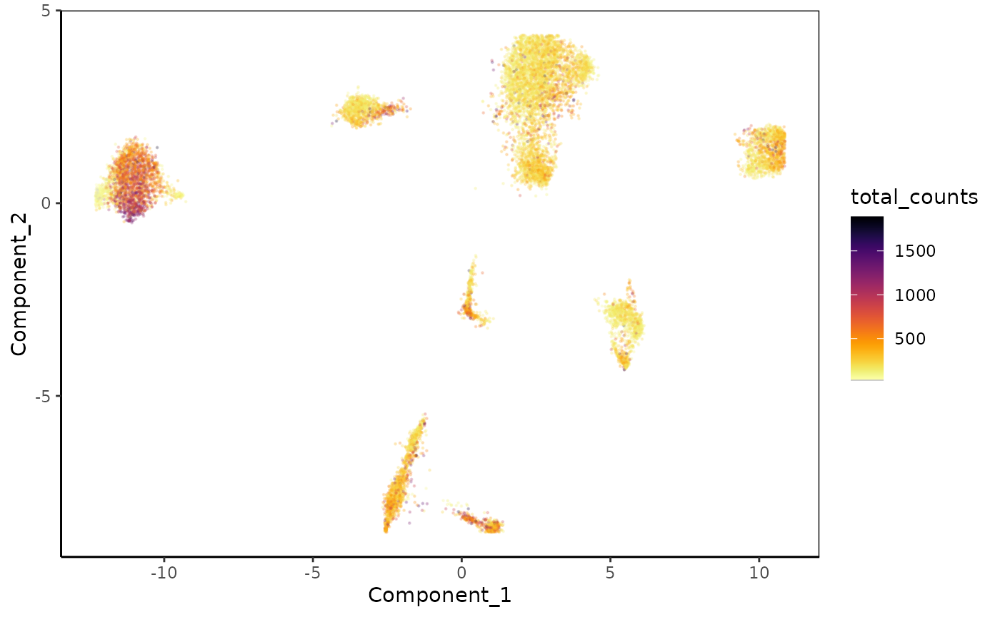
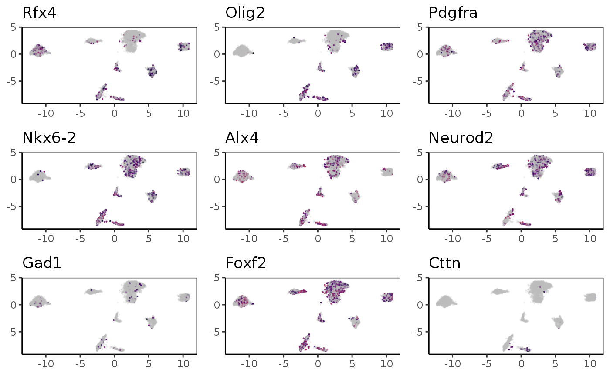
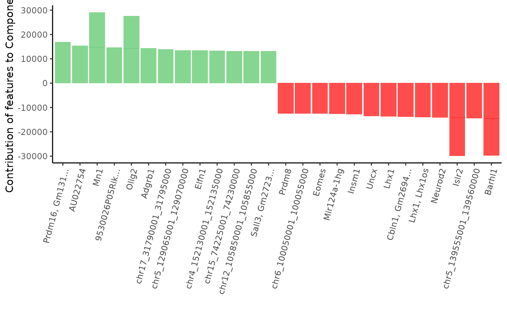
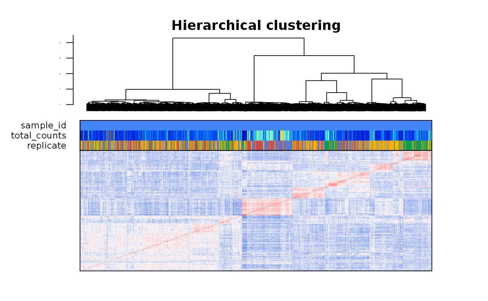
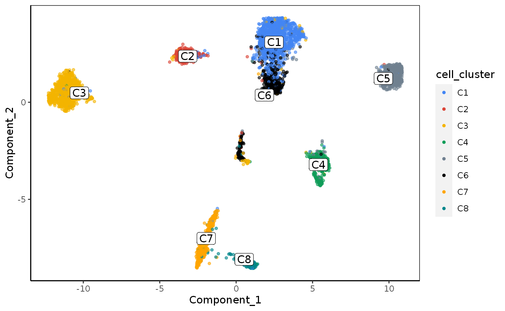

Analysis of scCUT&TAG in the mouse brain in different histone marks
2021-05-20
Source:vignettes/scCutTag_Bartosovic_H3K27me3.Rmd
scCutTag_Bartosovic_H3K27me3.RmdIntroduction
In their recent paper, Bartosovic et al. applied scCUT&TAG to the mouse brain to profile active (H3K4me3, H3K27ac, H3K36me3) and repressive (H3K27me3) histone marks by adapting CUT&TAG to the droplet-based 10X Genomics platform.
They showed that the oligodendrocyte lineage (OLG) cell type heterogeneity can be resolved using these epigenetic marks with more (H3K4me3, H3K27me3) or less (H3K36me3, H3K27ac) resolution.
In this article we will show the results of a basic analysis of these data using ChromSCape application.
Data Access
Bartosovic et al. made the datasets visualizable & downloadable at this link under the form of Dense Matrix.
Their data is also downloadable through GEO portal in the form of H5 Seurat files at GEO. As these files are not directly readable by ChromSCape, we recommend downloading the data through the first link of manually formating the data by reading the H5 files in R (see Saving and Loading Data from an h5Seurat File).
Interactive analysis and visualization
The datasets were analysis interactively with ChromSCape and an archive containing the datasets is available at . To vizualise the datasets directly in ChromSCape, unzip the directory and launch ChromSCape :
library(ChromSCape)
library(gridExtra)
library(ggplot2)
ChromSCape::launchApp()Once the app has loaded, click on the ‘Browse’ button under ‘Select output directory’ select the root of the folder (e.g. the folder containing the ‘ChromSCape_analyses’ folder).
The available datasets should now appear on the right box ‘Current analysis’. Select the dataset you wish to vizualise/analyse and follow the flow of the app by clicking on the left tabs that will be unlocked once the data has loaded.
Note: The first time you’ll open the application, you will be guided through a small tour of the application, that you can come back to any time you like by clicking the Help button on the upper right corner.
Info buttons are also here to help you when you are not sure about some features of the application.
H3K27me3 mark in the mouse brain
We will start with the repressive H3K27me3 histone mark.
First we will load the pre-computed SingleCellExperiments (replace the path with the path where you downloaded the computed analysis)
# Load the preprocessed data (in the 'Filtering_Normalize_Reduce' folder)
ChromScape_path = "/media/pprompsy/LaCie/InstitutCurie/Documents/Data/ChromSCape_Data/ChromSCape_3.13_2/ChromSCape_analyses/"
scExp = qs::qread(file.path(ChromScape_path,"Bartosovic_scCutTag_H3K27me3", "Filtering_Normalize_Reduce","Bartosovic_scCutTag_H3K27me3_100_40000_99.88_uncorrected.qs"))PCA & UMAP plots of replicates & total counts
First we will manually add the recplicate information present in the ‘barcode’ column of the SingleCellExperiment.
# 4 replicates (N1, N2, N3, N4)
scExp$replicate = gsub("H3K27me3_|_[ATCG]*|:.*|-.*","", scExp$barcode)
# Color by replicate
scExp = colors_scExp(scExp, annotCol = "replicate")We can now plot the PCA and the UMAP of the dataset, colored by replicate. Note that the first Principal Component (PC) of the PCA was removed as with TF-IDF normalization the first PC is almost always driven by count.
# Plot PCA (remember PC1 was removed as in TF-IDF + PCA, PC1 is driven by total count) & UMAP
p1 = plot_reduced_dim_scExp(scExp, color_by = "replicate", reduced_dim = "PCA", downsample = 10e6, transparency = 0.1, size = 0.2)
p2 = plot_reduced_dim_scExp(scExp, color_by = "replicate", reduced_dim = "UMAP", downsample = 10e6, transparency = 0.1, size = 0.2)
gridExtra::grid.arrange(p1,p2)
We observe clear clusters on the UMAP, that happen to be more discontinous than what was observed in the original paper. On the UMAP, it seems that some clusters are specific to one or two replicates. Let’s check that later when we will choose the clusters. This might be because replicates have s1 & 2 are older mice while replicate 4 is GFP+ and other clusters GFP-.
Let’s vizualise the PCA and UMAP of the normalized data. For this dataset we used the TF-IDF normalization, as the cells are binned on small genomic bins (5000bp).
This is why the first component of the PCA was removed from the analysis as it is almost always strongly driven by the total counts (library size).
p1 = plot_reduced_dim_scExp(scExp, color_by = "total_counts", reduced_dim = "PCA", downsample = 10e6, transparency = 0.2, size = 0.2)
p2 = plot_reduced_dim_scExp(scExp, color_by = "total_counts", reduced_dim = "UMAP", downsample = 10e6, transparency = 0.2, size = 0.2)
gridExtra::grid.arrange(p1,p2)
PCA & UMAP plots of replicates & total counts
We can now take the markers used in the paper for H3K27me3 and color the UMAP with the loci signal at the gene’s locations. Note that for repressive marks such as H3K27me3, the signal is supposedly anti-correlated with expression, therefore cells likely to express marker genes are cells lacking the signal.
For Rfx4 and Olig2, it seems that those genes are marked by H3K27me3 in all clusters but 2 and 3.
OLG_marker_genes = c("Rfx4","Olig2","Pdgfra","Nkx6-2", "Alx4", "Neurod2", "Gad1", "Foxf2","Cttn")
p = list()
for(i in seq_along(OLG_marker_genes)){
gene = OLG_marker_genes[i]
p[[i]] = plot_reduced_dim_scExp(scExp, color_by = gene, reduced_dim = "UMAP",
downsample = 10e6, transparency = 0.2,
size = 0.05, max_distanceToTSS = 2000
) + theme(axis.title = element_blank(),
legend.position = "none") +
ggtitle(gene)
}
gridExtra::grid.arrange(grobs = p, ncol = 3, nrow = 3) ## Clustering and correlations
Let’s check the cell-to-cell correlation by plotting a heatmap. We will check if cells group by correlation accordingly how they group on the UMAP feature space.
This also shows us if there are cells with very low correlation scores, that might be low covered cells or artifacts that we can later filter out using the ?filter_correlated_cell_scExp function.
plot_heatmap_scExp(scExp, downsample = 3000)
On the heatmap we can distinguish between 7 and 9 red squares, representing groups of highly correlated cells, e.g. clusters.
Some cells seem to have low correlation values with other cells, and group with the largest cell cluster, let’s filter lowly correlated cells first and then define the clusters.
scExp_cf = filter_correlated_cell_scExp(scExp,
random_iter = 5, # for speed
corr_threshold = 99,
percent_correlation = 1)## ChromSCape::filter_correlated_cell_scExp - Calculating correlation threshold using random matrix values...## ChromSCape::filter_correlated_cell_scExp - Filtering low correlated cells...## ChromSCape::filter_correlated_cell_scExp - Re-calculating hierarchical clustering...## Filtered 552 lowly correlated cells.Let’s pick 8 clusters using hierarchical clustering on the correlation matrix, as shown above the heatmap.
scExp_cf = choose_cluster_scExp(scExp_cf, nclust = 8)
plot_heatmap_scExp(scExp)
Let’s color the cells by cluster to see if the correlation clusters match the clusters observed in the 2D UMAP space.
plot_reduced_dim_scExp(scExp_cf, color_by = "cell_cluster", reduced_dim = "UMAP") Finally we can plot a nice table to see the repartition of replicates in each of the clusters.
scExp_cf$sample_id = scExp_cf$replicate # Assign replicate to sample_id
scExp_cf = colors_scExp(scExp_cf, annotCol = "sample_id") # Assign replicate to sample_id
num_cell_in_cluster_scExp(scExp_cf)| C1 | C2 | C3 | C4 | C5 | C6 | C7 | C8 | #Cells | |
| N1 | 686 | 98 | 1054 | 313 | 354 | 137 | 12 | 38 | 2692 |
| N2 | 906 | 66 | 925 | 306 | 300 | 295 | 16 | 24 | 2838 |
| N3 | 1623 | 722 | 286 | 314 | 707 | 508 | 368 | 99 | 4627 |
| N4 | 205 | 13 | 162 | 63 | 15 | 371 | 881 | 417 | 2127 |
| #Cells | 3420 | 899 | 2427 | 996 | 1376 | 1311 | 1277 | 578 | 12284 |
| p-value | <0.00001 | <0.00001 | <0.00001 | <0.00001 | <0.00001 | <0.00001 | <0.00001 | <0.00001 |
Clusters 7 & 8 seems to be enriched in N3 & N4 populations.
Session information
## R Under development (unstable) (2020-12-16 r79643)
## Platform: x86_64-pc-linux-gnu (64-bit)
## Running under: Ubuntu 16.04.7 LTS
##
## Matrix products: default
## BLAS: /home/pprompsy/R/R-4.1/R-devel/lib/libRblas.so
## LAPACK: /home/pprompsy/R/R-4.1/R-devel/lib/libRlapack.so
##
## locale:
## [1] LC_CTYPE=en_US.UTF-8 LC_NUMERIC=C
## [3] LC_TIME=fr_FR.UTF-8 LC_COLLATE=en_US.UTF-8
## [5] LC_MONETARY=fr_FR.UTF-8 LC_MESSAGES=en_US.UTF-8
## [7] LC_PAPER=fr_FR.UTF-8 LC_NAME=C
## [9] LC_ADDRESS=C LC_TELEPHONE=C
## [11] LC_MEASUREMENT=fr_FR.UTF-8 LC_IDENTIFICATION=C
##
## attached base packages:
## [1] stats graphics grDevices utils datasets methods base
##
## other attached packages:
## [1] ggplot2_3.3.3 gridExtra_2.3 ChromSCape_1.1.5
##
## loaded via a namespace (and not attached):
## [1] utf8_1.2.1 shinydashboard_0.7.1
## [3] reticulate_1.20 tidyselect_1.1.1
## [5] RSQLite_2.2.7 AnnotationDbi_1.53.1
## [7] htmlwidgets_1.5.3 grid_4.1.0
## [9] BiocParallel_1.25.5 Rtsne_0.15
## [11] munsell_0.5.0 ScaledMatrix_0.99.2
## [13] ragg_1.1.2 statmod_1.4.35
## [15] scran_1.19.19 DT_0.18
## [17] umap_0.2.7.0 miniUI_0.1.1.1
## [19] withr_2.4.2 batchelor_1.7.14
## [21] colorspace_2.0-1 Biobase_2.51.0
## [23] filelock_1.0.2 highr_0.9
## [25] knitr_1.33 rstudioapi_0.13
## [27] stats4_4.1.0 SingleCellExperiment_1.13.14
## [29] labeling_0.4.2 MatrixGenerics_1.3.1
## [31] GenomeInfoDbData_1.2.5 farver_2.1.0
## [33] bit64_4.0.5 rprojroot_2.0.2
## [35] vctrs_0.3.8 generics_0.1.0
## [37] xfun_0.22 BiocFileCache_1.99.7
## [39] rlist_0.4.6.1 R6_2.5.0
## [41] GenomeInfoDb_1.27.11 ggbeeswarm_0.6.0
## [43] rsvd_1.0.5 locfit_1.5-9.4
## [45] msigdbr_7.4.1 bitops_1.0-7
## [47] cachem_1.0.4 DelayedArray_0.17.13
## [49] assertthat_0.2.1 promises_1.2.0.1
## [51] BiocIO_1.1.2 shinycssloaders_1.0.0
## [53] scales_1.1.1 beeswarm_0.3.1
## [55] gtable_0.3.0 beachmat_2.7.7
## [57] qualV_0.3-3 rlang_0.4.11
## [59] systemfonts_1.0.1 coop_0.6-2
## [61] rtracklayer_1.51.5 lazyeval_0.2.2
## [63] yaml_2.2.1 httpuv_1.6.1
## [65] tools_4.1.0 ellipsis_0.3.2
## [67] kableExtra_1.3.4 jquerylib_0.1.4
## [69] BiocGenerics_0.37.5 Rcpp_1.0.6
## [71] sparseMatrixStats_1.3.8 progress_1.2.2
## [73] zlibbioc_1.37.0 purrr_0.3.4
## [75] RCurl_1.98-1.3 prettyunits_1.1.1
## [77] openssl_1.4.4 viridis_0.6.0
## [79] S4Vectors_0.29.18 zoo_1.8-9
## [81] SummarizedExperiment_1.21.3 cluster_2.1.0
## [83] colorRamps_2.3 fs_1.5.0
## [85] magrittr_2.0.1 RSpectra_0.16-0
## [87] data.table_1.14.0 ResidualMatrix_1.1.0
## [89] colourpicker_1.1.0 matrixStats_0.58.0
## [91] stringfish_0.15.1 hms_1.0.0
## [93] qs_0.24.1 shinyjs_2.0.0
## [95] mime_0.10 evaluate_0.14
## [97] xtable_1.8-4 XML_3.99-0.6
## [99] IRanges_2.25.11 compiler_4.1.0
## [101] biomaRt_2.47.9 shinyhelper_0.3.2
## [103] scater_1.19.11 tibble_3.1.1
## [105] KernSmooth_2.23-18 crayon_1.4.1
## [107] htmltools_0.5.1.1 later_1.2.0
## [109] tidyr_1.1.3 RcppParallel_5.1.4
## [111] DBI_1.1.1 RApiSerialize_0.1.0
## [113] dbplyr_2.1.1 rappdirs_0.3.3
## [115] babelgene_21.4 Matrix_1.2-18
## [117] parallel_4.1.0 metapod_0.99.5
## [119] igraph_1.2.6 GenomicRanges_1.43.4
## [121] forcats_0.5.1 pkgconfig_2.0.3
## [123] pkgdown_1.6.1 GenomicAlignments_1.27.2
## [125] plotly_4.9.3 scuttle_1.1.18
## [127] xml2_1.3.2 svglite_2.0.0
## [129] vipor_0.4.5 bslib_0.2.4
## [131] dqrng_0.3.0 stringdist_0.9.6.3
## [133] webshot_0.5.2 XVector_0.31.1
## [135] rvest_1.0.0 stringr_1.4.0
## [137] digest_0.6.27 ConsensusClusterPlus_1.55.0
## [139] matrixTests_0.1.9 Biostrings_2.59.2
## [141] rmarkdown_2.8 edgeR_3.33.3
## [143] DelayedMatrixStats_1.13.6 restfulr_0.0.13
## [145] curl_4.3.1 shiny_1.6.0
## [147] Rsamtools_2.7.2 rjson_0.2.20
## [149] lifecycle_1.0.0 jsonlite_1.7.2
## [151] BiocNeighbors_1.9.4 askpass_1.1
## [153] desc_1.3.0 viridisLite_0.4.0
## [155] limma_3.47.13 fansi_0.4.2
## [157] pillar_1.6.0 lattice_0.20-41
## [159] shinyFiles_0.9.0 KEGGREST_1.31.2
## [161] fastmap_1.1.0 httr_1.4.2
## [163] glue_1.4.2 png_0.1-7
## [165] Sushi_1.29.0 bluster_1.1.12
## [167] bit_4.0.4 stringi_1.5.3
## [169] sass_0.3.1 blob_1.2.1
## [171] textshaping_0.3.4 BiocSingular_1.7.2
## [173] memoise_2.0.0 dplyr_1.0.6
## [175] irlba_2.3.3